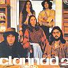

Celtic Lyrics Corner > Artists & Groups > Clannad > Clannad 2 > Chuaigh Mé 'Na Rosann
|  | Chuaigh Mé 'Na Rosann |
| Credits : | n/a |
| Appears On : | Clannad 2 |
| Language : | Gaeilge (Irish Gaelic) |
| Lyrics : | English Translation : |
| Chuaigh mé 'na Rosann ar cuairt | I went on a visit to the roses |
| Gur bhreathnaigh me uaim an speir | And looked towards the sky |
| Is thart fá na holeain ó thuaidh | And around the northern islands |
| Mar eiht agus cu 'na diaidh | Like a deer being followed by a dog |
| Se dearfadh gach duine fan chuan | Everyone at the bay would say |
| O tharla mé nuas fán cheidh | On seeing me down by the quay |
| "Nach maith a aithnim ar do ghruaim | "I can see clearly by your sadness |
| Gur fear thú 'bhfuil an toir 'na dhiaidh" | That you are a man being chased" |
| Casadh dom an ainnir dheas óg | I met a beautiful young woman |
| Ach má casadh 'si a labhair go géar | But she spoke sharply |
| "Más fear thú a bhaineas do mhnaio óig | "If you are a man who is engaged to a young woman |
| Cha mholaim ró-mhór do thrade | I do not praise your trade |
| Chonaic mé fear ar thir mór | I saw a man on the mainland |
| Is e ag siul gan bhróg inné | Walking without shoes yesterday |
| Is dóigh liom gur thusa an fear óg | I think you are the young man |
| Is go bhfuil ort an tóir 'do dhaigh" | That you are being chased" |
| Thit muid a dtuirse is i mbrón | We became tired and sad |
| Is d'fhiafraigh mé den óigbhean chaoin | And I asked the gentle woman |
| "Cá bhfuigheas muid gloine le h-ól | "Where will we get a drink |
| A thógfadh an brón dar gcroi?" | That would lift the sadness from our hearts?" |
| "Ta teach beag ar leath-taobh an ród | "There is a little house by the road |
| Is coinnionn sé i gcónaí braon | And they always keep a drop |
| Gabh thusa, agus buail at an mbord | Go and knock on the table |
| Is ní dhíolfaidh do phócaí a'n phingin" | And you will not pay a penny" |
| Cha rabh mise i bhfad ag gabháil cheoil | I wasn't long making music |
| Gur chruinnigh go leor 'un toigh | Before many came to the house |
| Achan fhear is a ghloine ina dhom | Everyman with a glass in his hand |
| Le comhmóradh a thabhairt don dis | To congratulate the couple |
| Bhi biotáilte fairsing go leor | Spirits were widely available |
| Cha rabh beagán á ól sa tir | There was much drinking |
| Is dá dtarraingeoinnse gálun Uí Dhomhnaill | And if I pulled O'Donnell's gallon |
| B'fhurst' mo scor a dhrol | My score would easily be settled |
| Tharla mé isteach i dtoigh-an-óil | I happened to go into the pub |
| Agus b'fhaiteach go lear mé le suí | And I was nervous to sit down |
| Ar eagla go dtiochfadh an tóir | In case the chase would come |
| Is go mbainfi an óighean diom | And the young woman would be taken from me |
| Nuair a fuair muid gach ni mar ba chóir | When we found everything was as it should be |
| Agus mheas me gur chóir dom sui | And I thought I should sit down |
| Sé duirt si "Bi thusa ag gabháil cheoil | She said, "Make music |
| Is ní dhíolfaidh do phócaí a'n phingin" | And you will not pay a penny" |
| Nuair a lig muid dúinn tuirse le brón | When we relieved our tiredness with sadness |
| Sé d'fhiafraigh an óigbhean diom | The young woman asked me |
| "Cá mbionn tú 'do chónaí sa lá | "Where do you live during the day |
| Nuair nach gcoinnionn tú cró doit féin?" | When you do not have a house of your own?" |
| "Bimse seal 'dtoigh-an-óil | "I spend some time in the pub |
| Cha deanaimse lón den phingin | I do not place importance on money |
| An méid ud a shaothraim sa lá | The amount I earn during the day |
| A chaitheamh le spórt san oiche" | I spend on enjoyment at night" |